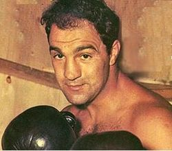

Роккі Марчіано (справж. Рокко Френсіс Маркеджано ) - народ. 1 вересня 1923, Броктон, Масачусетс, США. Американський боксер-важковаговик, чотири роки поспіль ставав чемпіоном світу (у 1952, 1953, 1954 та 1955). Єдиний чемпіон світу у важкій вазі, який протягом своєї спортивної кар'єри не зазнав жодної поразки. У 1951 відправив у нокаут тогочасну легенду боксу — важковаговика Джо Луіса. Виграв 49 поєдинків протягом своєї кар'єри, 43 з них — нокаутом. У 1952, 1954 та 1955 був визнаний боксером року журналом «The Ring». Шість разів захистив свій титул чемпіона світу у важкій вазі (по два рази у 1953, 1954 та 1955), п'ять з них — нокаутом. У 1959 увійшов до Залу Слави боксу, у 1990 був посмертно включений до Міжнародного Залу Слави боксу.